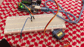

Library
Picture of the circuit!

gif of the circuit!

Schematic of the circuit!

#include //import the servo library
#include //include servo lib
#include // include capacitive sensor lib
Servo myservo;
CapacitiveSensor sensor = CapacitiveSensor(2,4); // 1M resistor between pins 2& 4
const int SERVO_PIN = 9; // Arduino pin connected to servo motor's pin
Servo servo; // create servo object to control a servo
// variables will change:
int angle = 0; // the current angle of servo motor
int lastTouchState; // the previous state of touch sensor
int currentTouchState; // the current state of touch sensor
void setup() {
Serial.begin(9600); // initialize serial communication
pinMode(2, INPUT); // set arduino pin to input mode
servo.attach(SERVO_PIN); // attaches the servo on pin 9 to the servo object
servo.write(angle);
currentTouchState = digitalRead(2);
}
void loop() {
lastTouchState = currentTouchState; // save the last state
currentTouchState = digitalRead(2); // read new state
if(lastTouchState == LOW && currentTouchState == HIGH) {
Serial.println("The sensor is touched");
// change angle of servo motor
if(angle == 0)
angle = 90;
else
if(angle == 90)
angle = 0;
// control servo motor arccoding to the angle
servo.write(angle);
}
}
}